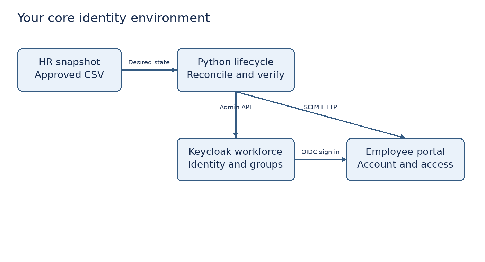
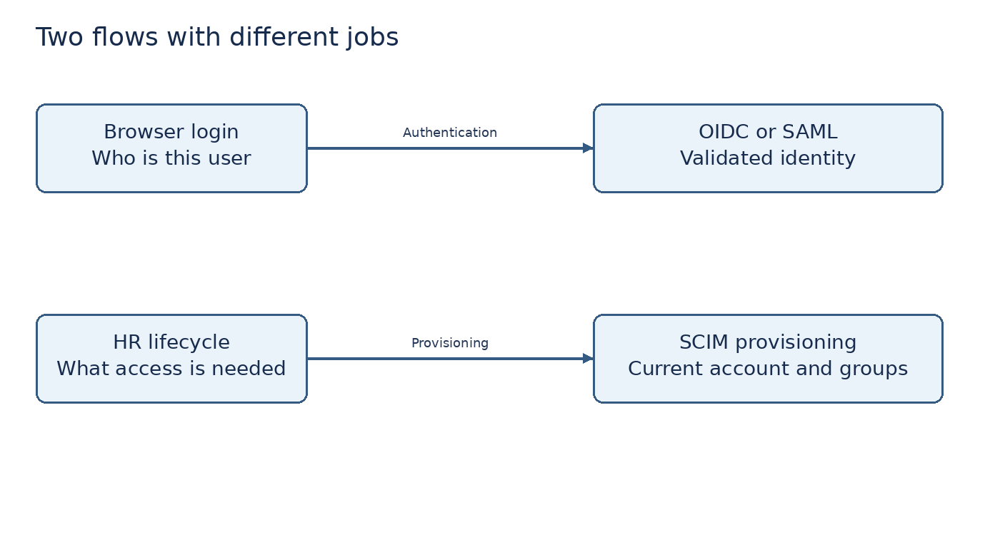

A practical learning project for identity administration, SSO, provisioning, lifecycle automation and access governance
Version 1.0 • 2 October 2026 • Windows learning environment
You will build and operate an identity environment for a fictional company called Northstar People. The company has Engineering, Finance and HR teams. Your job is to make employee access predictable, remove obsolete access, investigate failures and produce evidence a reviewer can understand.
This manual follows a learn, build, test and explain pattern. Read the definitions, carry out the numbered actions, perform both allowed and denied access tests, and record what actually happened. Do not mark a task complete because a configuration screen looks correct.
The core project runs locally with Keycloak, a working employee portal, a small SCIM provisioning target and Python automation. These are real protocol exchanges and enforced access controls using artificial employees. The HR input is a CSV rather than a commercial HRIS. The provisioning target implements a documented SCIM subset. The governance ledger is custom tooling rather than Okta Identity Governance. Those distinctions belong in your portfolio.
The optional Okta track gives you product-specific administration practice if you can obtain an Integrator Free Plan. Complete it after the core so signup eligibility does not prevent learning. This manual does not require paid trials, EC2, S3 hosting, Lambda, paid identity governance, a domain purchase or a public tunnel.
What you receive: the manual, portal source,
lifecycle automation, governance commands, reporting commands, sample
employee records, incident and change templates, test results and a JD
mapping. Extract the supplied ZIP before starting. Commands assume its
iam-lab directory is open in VS Code.
How long: allow approximately 30–45 hours over several weeks. This is a planning estimate, not a vendor promise. Spend additional time repeating failures and explaining your decisions.
Start with Steps 0–4. They establish your local identity system. Do not attempt every module in one sitting.
| Step | Outcome | Suggested effort |
|---|---|---|
| 0–2 | Scope, cost gate, tools and architecture | 3 hours |
| 3–5 | Identity directory, groups, OIDC and provisioning | 7 hours |
| 6–8 | Joiners, movers, leavers and MFA | 7 hours |
| 9–11 | SAML, approvals and access certification | 7 hours |
| 12–14 | Troubleshooting, AWS policies and operations | 5 hours |
| 15–17 | Optional Okta, evidence, cleanup and interview | 6 hours |
What we are doing: translate the JD into access outcomes. In corporate work an IAM engineer starts with requirements, system owners and authoritative data, not a collection of users created without a purpose.
Terms: an identity is a representation of a person or workload. Authentication establishes who is signing in. Authorization decides what that identity may do. Provisioning creates or updates an account in a target system. Deprovisioning removes access; it does not always delete data. An identity provider, or IdP, authenticates users for other applications. An HRIS is a human resources information system that usually supplies employment status and organizational attributes.
docs/scope.md inside iam-lab.templates/change-record.md to open CHG001 for the
initial build. Document rollback as disabling the new client and
restoring recorded settings, with database backup where necessary.Requirements to implement: Engineering can access Engineering but not Finance; Finance can access Finance but not Engineering; movers lose the former department role; leavers cannot start new sessions and cannot use the portal through an existing session; temporary admin access expires; an inactive account is reviewed before deletion; failure is recorded instead of silently treated as success.
Evidence: scope document and first change record. Checkpoint: explain the difference between signing in successfully and being allowed to read Finance information.
What we are doing: choose a repeatable zero paid service design before enabling cloud features.
| Tool | Purpose | Free boundary |
|---|---|---|
| Keycloak | IdP, MFA, groups, sessions, OIDC and SAML | Local open-source software |
| Python and supplied code | Portal, provisioning, reconciliation and reports | Local software; no paid API |
| Docker Desktop Personal | Run Keycloak on Windows | Personal and education use under vendor terms [R1] |
| VS Code and Git | Edit files and record changes | Local tools; GitHub account optional |
| AWS IAM | Policy authoring and simulation | No compute resource is required |
| Okta Integrator Free Plan | Optional Okta administration and Workflows | Qualifying business email, 10 active users, 5 workflows [R2] |
https://developer.okta.com/signup/. Use truthful
registration details. If you lack an eligible business email, complete
Keycloak; do not purchase a domain solely to continue.docs/cost-register.md: local core = no paid
cloud service required; AWS exercise = IAM policies and simulation only;
optional Okta = free-plan feature check. Record an actual review
date.Cost checkpoint: no running AWS infrastructure is needed. Budget alerts, if you already use them, notify you; they are not an automatic universal spending cap.
Terms: a container packages an application and its
dependencies. A realm is an isolated identity namespace in Keycloak.
Loopback means your own computer; localhost and
127.0.0.1 refer to it. A redirect URI is the exact address
the IdP is allowed to send your browser back to after authentication. A
bearer token gives access to whoever possesses it.
wsl --install from Administrator PowerShell, restart
Windows, and finish Docker setup. Only use Administrator PowerShell when
Windows installation requires it.docker version in a normal PowerShell
terminal. You should see client and server information. If only the
client appears, the engine is not ready.https://www.python.org/downloads/windows/. Enable the
Python launcher during installation. Run py --version. A
Microsoft Store prompt usually means Python or its path/launcher needs
attention.C:\Projects\Northstar-IAM. Open the contained
iam-lab folder with VS Code using File → Open Folder.iam-lab. Run the following:py -m venv .venv
.\.venv\Scripts\python.exe -m pip install -r requirements.txt
New-Item -ItemType Directory -Force privateThere is no need to activate the environment; the explicit Python
path avoids PowerShell execution policy changes. private
will hold local state, reports and logs that should not be committed
automatically.
Architecture: HR snapshot → lifecycle script → Keycloak Admin API and SCIM HTTP API. The browser signs into Keycloak using OIDC and returns to the portal. The portal checks the provisioned account, department membership and temporary grants at each protected request. SSO alone does not create a portal account.

Boundary: Keycloak runs at
http://localhost:8080; the portal runs at
http://localhost:5000. The local HTTP exception is for an
isolated development lab. Corporate deployments require HTTPS, trusted
certificates, restricted management access, hardened application
hosting, managed secrets and durable audit storage. Never expose these
development services publicly.
Evidence: sanitized tool versions and architecture explanation. Checkpoint: explain why Okta hosted in the cloud cannot directly send SCIM requests to a service listening only on your laptop’s localhost.
What we are doing: create the authoritative identity environment and group-based department mapping. We will create the first employees through the automation in Step 6, rather than duplicating identities manually.
Terms: RBAC is role-based access control. Groups represent business roles. Least privilege means granting the access needed for a task and verifying that unrelated access is denied. A service account represents automation rather than an employee.
$env:KC_BOOTSTRAP_ADMIN_USERNAME = 'lab-admin'
$env:KC_BOOTSTRAP_ADMIN_PASSWORD = Read-Host 'Choose a local lab admin password'
docker run -d --name northstar-kc -p 127.0.0.1:8080:8080 -e KC_BOOTSTRAP_ADMIN_USERNAME -e KC_BOOTSTRAP_ADMIN_PASSWORD -v northstar-kc-data:/opt/keycloak/data quay.io/keycloak/keycloak:26.8.0 start-dev
Remove-Item Env:KC_BOOTSTRAP_ADMIN_PASSWORDRead-Host here is visible input: enter it when you are
not screen sharing, and do not screenshot it. The image version is
pinned for reproducibility; record any version change before
troubleshooting. The local volume persists configuration across
container stops. start-dev is not a production
deployment.
http://localhost:8080 and select Administration
Console. Sign in as lab-admin. If unavailable, run
docker logs northstar-kc and wait for startup. Do not
create a second container as a workaround.workforce,
enable it, and create it. Confirm the selected realm says workforce
before each change. Do not put employees in master.employees, dept-engineering,
dept-finance, dept-hr.employeeId, with display name Employee ID and multivalued
off. Give administrators view/edit permissions. Do not give employees
edit access. This lets the Admin API store a stable HR identifier.
Save.Role matrix: employees receive portal access only
after provisioning; Engineering receives dept-engineering;
Finance receives dept-finance; HR receives
dept-hr. No employee receives realm administration rights.
Temporary portal-admin is governed separately by an
expiring grant, not the department mapping.
Evidence: group list, employeeId definition, event settings and session settings. Checkpoint: why should a user not be able to edit their own department or employment status?
What we are doing: integrate a real relying application with the IdP. OIDC adds identity information to OAuth 2.0. OAuth itself is an authorization framework; it is not interchangeable with authentication.
Terms: a client is an application registered with
the IdP. An authorization code is exchanged for tokens through the
application’s back channel. PKCE binds that exchange to the client that
began the request. state helps protect the login redirect
flow; nonce binds an ID token to the authentication
request. An ID token is for the client to verify authentication; an
access token is for an API to authorize access. Do not use an ID token
as a generic API bearer credential.
employee-portal. Name: Employee portal.
Next.http://localhost:5000/callback. Set Home URL to
http://localhost:5000/. Do not use a wildcard redirect.
Save.profile and
email client scopes available..\.venv\Scripts\python.exe -c "import secrets; print(secrets.token_urlsafe(32))".
Save it privately in a password manager. Then create Terminal A in VS
Code, in iam-lab, and set the values below. Use fresh
random secrets each time you rebuild the lab:$env:PORTAL_SECRET = .\.venv\Scripts\python.exe -c "import secrets; print(secrets.token_urlsafe(32))"
$env:SCIM_TOKEN = Read-Host 'Paste a random SCIM token generated and saved privately'
$env:OIDC_CLIENT_SECRET = Read-Host 'Paste the employee portal client secret'
$env:OIDC_CLIENT_ID = 'employee-portal'
$env:OIDC_DISCOVERY = 'http://localhost:8080/realms/workforce/.well-known/openid-configuration'
$env:AUTHLIB_INSECURE_TRANSPORT = '1'
.\.venv\Scripts\python.exe app\portal.pyhttp://localhost:5000. You should see Employee
portal and Sign in with SSO. The employee accounts do not exist yet;
finish Step 6 before the first successful employee login.Under the hood: Authlib uses discovery metadata and verifies the token as part of the code flow. The portal stores only selected identity claims in its signed session cookie, not raw tokens. It imposes a five-minute local session age. Its local logout clears the application session, not the Keycloak session. HTTP cookies are not Secure in this loopback development configuration; production requires HTTPS and Secure cookies.

Evidence: client settings with secret hidden and the portal home screen. Checkpoint: why does a successful SSO callback still return 403 when a target account has not been provisioned?
What we are doing: examine real HTTP provisioning requests and understand their effects. SCIM is the System for Cross-domain Identity Management. SSO answers who the user is; SCIM maintains accounts and memberships in the target.
The supplied target implements Users and Groups with creation, retrieval, replacement, deletion, simple equality filters, pagination and a limited replace PATCH. It uses SQLite for persistence and enforces a shared bearer token. It does not implement full SCIM discovery, bulk operations, full filter grammar, ETags or every PATCH path. Do not describe it as a certified connector. Keycloak core is not being used as a native SCIM server; Python bridges its Admin API and this SCIM target.
$env:SCIM_TOKEN = Read-Host 'Paste the saved local SCIM token'
$headers = @{Authorization = "Bearer $env:SCIM_TOKEN"}
Invoke-RestMethod -Uri 'http://localhost:5000/scim/v2/Users' -Headers $headerstotalResults
zero. Save a sanitized response in your evidence notes. Do not copy
headers containing the bearer token.Invoke-RestMethod -Uri 'http://localhost:5000/scim/v2/Users' -Headers @{Authorization='Bearer deliberately-wrong'}Expect HTTP 401; PowerShell presents this as an error. This is a passing negative test.
$filter = [uri]::EscapeDataString('userName eq "alex.engineer@example.test"')
$u = Invoke-RestMethod -Uri "http://localhost:5000/scim/v2/Users?filter=$filter" -Headers $headers
$u.Resourcesid, externalId,
userName, name and active. The
target’s id is its internal identifier. externalId is E001, the HR
correlation identifier. They are not interchangeable.$id = $u.Resources[0].id
$body = @{schemas=@('urn:ietf:params:scim:api:messages:2.0:PatchOp'); Operations=@(@{op='replace'; path='active'; value=$false})} | ConvertTo-Json -Depth 6
Invoke-RestMethod -Method Patch -Uri "http://localhost:5000/scim/v2/Users/$id" -Headers $headers -ContentType 'application/scim+json' -Body $bodyDo not deactivate E001 until you have tested normal access. Reapply the approved active HR snapshot in Step 6 to restore it. Record the deviation and reconciliation.
Checkpoint: explain HTTP 200, 201, 204, 400, 401, 403, 404, 409 and 429. A 401 is an invalid or missing credential; a 403 generally means the request is recognized but forbidden. A 409 duplicate requires reconciliation, not blindly retrying creation.
What we are doing: provision employees from approved HR records. This is a complete local pipeline rather than an instruction to manually create users and call it automation.
hr-automation.manage-users,
view-users, query-users and
view-realm. Do not assign realm-admin. Record that
manage-users is still broad in this disposable realm; production should
use finer scoped permissions where possible.$env:KC_AUTOMATION_SECRET = Read-Host 'Paste the hr automation client secret'
$env:KC_BASE = 'http://localhost:8080'
.\.venv\Scripts\python.exe automation\lifecycle.py data\employees.csv--apply.data/employees.csv. Understand every field:
employee_id stays stable; username is fixed in this lab; first_name and
last_name are display data; department selects managed access; status is
active or terminated. Only artificial @example.test
identities are accepted..\.venv\Scripts\python.exe automation\lifecycle.py data\employees.csv --applyVALIDATED E001, VALIDATED E002,
VALIDATED E003. In Keycloak → Users verify three users,
enabled status, employeeId and the expected groups. Inspect the SCIM
target using Step 5.Script behaviour: it validates input before writes, correlates employee IDs, creates missing active identities, updates approved managed groups, provisions target accounts, reads both systems back and logs success only after state validation. It does not delete a person just because they are absent from the CSV. Absence is ambiguous; terminated is an explicit instruction. It manages four groups and leaves other groups alone.
Failure boundary: reconciliation is not an atomic transaction across systems. A later failure can leave earlier changes applied. The script stops with a failure record. Read the affected identity in both systems, repair the cause and rerun the same approved snapshot. It retries limited HTTP 429 and server errors with backoff; it stops on connection uncertainty. Never blindly replay an uncertain create—look for the existing identity first. It is single-runner tooling; do not execute concurrent copies.
Evidence: approved snapshot, sanitized successful run, Keycloak group membership, target account, allowed/denied tests and rerun count. Checkpoint: distinguish a real vendor HRIS connector from a CSV that emulates the authoritative HR source.
What we are doing: transfer Alex from Engineering to Finance. Giving the new access without removing old access creates privilege accumulation.
data/employees-before-move.csv.--apply after checking the proposed state.Evidence: before/after role matrix and HTTP results. Checkpoint: why can a mover still have a valid identity session while no longer being authorized for their old resource?
active is false and managed groups are
gone.automation/report.py in Step 11 and look for any
still-live temporary grants. Active-check enforcement prevents a
disabled user using them, but clean up the ledger too. Offboarding is
not complete until exceptional grants, tokens and other applications are
reviewed.Important: ending an IdP session does not universally revoke every issued access token, every SaaS session or every application cookie. This portal rejects deactivated accounts through its own live check. A production leaver plan must include target-specific session and token behaviour, revocation capabilities, service ownership and credential rotation.
Terms: MFA combines factors from distinct categories, such as a password and a possession factor. TOTP is a time-based one-time password. TOTP improves on password-only login but is not phishing resistant. WebAuthn/passkeys or security keys may provide phishing resistant authentication.
Checkpoint: why is an MFA reset itself a sensitive privileged operation?
What we are doing: configure a second application identity boundary using signed SAML assertions. The workforce realm is the IdP; a new partner realm is the SAML service provider through identity brokering. This is an actual local SAML exchange, not a diagram-only exercise. It is not a commercial SaaS integration.
Terms: an assertion is an IdP’s signed statement about authentication and attributes. The Assertion Consumer Service, or ACS, receives the response. An entity ID identifies a SAML party. Metadata distributes endpoints and public signing certificates. A certificate rollover changes trusted keys and needs coordination. SAML signing certificates are different from HTTPS server certificates.
partner. Keep registration
off. Enable login/admin events as you did in workforce.workforce-saml. Display name: Workforce SAML.http://localhost:8080/realms/workforce/protocol/saml/descriptorSelect Import if shown, review the endpoints, enable Validate signature, and save. Keep signed assertions required. If a signing certificate is not populated, inspect the metadata’s signing KeyDescriptor and import its X509Certificate into the validating certificate field. Public certificates can be shared; private keys cannot.
http://localhost:8080/realms/partner/broker/workforce-saml/endpoint.
This is the ACS we need on the workforce client.http://localhost:8080/realms/partner. Record its exact
value. Open the provider’s SAML SP metadata endpoint:http://localhost:8080/realms/partner/broker/workforce-saml/endpoint/descriptorhttp://localhost:8080/realms/partner/account in a
new private window. Select Workforce SAML on the login screen. Sign in
as Alex at workforce, including MFA. On first broker login complete the
Review profile screen and supply artificial profile values if required.
Do not auto-link an account just because an unverified email
matches.Evidence: both realm settings, metadata trust relationship, successful brokered login, failed wrong-certificate test and restoration. Checkpoint: do not call a base64-decoded assertion verified until the signature, issuer, audience, destination and time conditions have been validated.
What we are doing: add an approval-controlled entitlement with automatic runtime expiry. A ticket saying approved is insufficient unless something enforces the decision.
The supplied governance command reads requests, rejects self-approval, checks a reviewer allowlist, allows only portal-admin and limits new grants to at most one hour. It stores the expiry in the target database. The portal checks the grant and active account on every admin request. Reviewer identity is supplied in a local CSV by the operator; it is not independently authenticated. A corporate version needs an authenticated request interface, verified approver identity, resource owner rules, tamper-resistant history and service boundaries.
data/requests.csv. Keep request_id REQ001,
username Alex, entitlement portal-admin and reviewer
manager.engineering@example.test. Write a meaningful business
justification..\.venv\Scripts\python.exe -c "import time; print(int(time.time()+300))"/admin page should
return 403. Run:.\.venv\Scripts\python.exe automation\governance.py data\requests.csv
.\.venv\Scripts\python.exe automation\governance.py data\requests.csv --apply/admin page to return 200 after approval.
After expiry it must return 403, without any manual group removal. If
the five-minute local session expires, sign in again and verify the
grant is still denied.Evidence: sanitized request ledger, pre-approval denial, approved access, expiry denial and negative tests. Checkpoint: distinguish operational expiry enforcement from a scheduler that merely emails someone when access should end.
What we are doing: review who has access, whether it remains justified, and whether remediation was completed. Certification is a business decision supported by data, not simply exporting users.
.\.venv\Scripts\python.exe automation\report.pyprivate/access-review.csv in VS Code or a
spreadsheet program. It includes target user, employee ID, active flag,
group access, valid temporary grants, last observed portal use and blank
reviewer decisions.docs/licence-review.csv with application, user,
observed usage window, evidence source, licence assumption, owner,
decision and verification. The portal has no paid licence; monetary
savings are not measured. Do not invent a dollar saving.docs/oauth-inventory.csv with client_id, owner,
purpose, approved_scopes, redirect_uris, grant_types, service_account,
review_date and decision. Populate it from workforce → Clients.
Investigate broad redirect wildcards, unexpected direct grants, unused
clients and unowned service accounts.unapproved-demo with no
permissions, record it as an unapproved client finding, and remove it
after review. This demonstrates inventory review, not enterprise
discovery of every shadow IT application.Audit evidence: private/audit.csv contains target changes and permitted resource access; private/lifecycle.jsonl contains reconciliation outcomes. Export matching Keycloak events from the admin UI where available, or capture filtered event details. Include UTC times, actor, target, action, result and source. Keep original evidence privately and publish only sanitized copies.
Integrity: local SQLite and CSV can be altered by the operator. Hashes detect later changes against a known recorded value but do not establish authenticity on their own. Corporate evidence needs restricted retention, independent logging and a defined chain of custody.
Checkpoint: access certification, licence utilization and SOC 2/ISO 27001 compliance are different things. This lab produces useful evidence examples; it does not establish organizational compliance or perform a certified audit.
What we are doing: own the service when it fails. Corporate IAM work includes determining whether the fault is authentication, authorization, provisioning, source data or a session boundary.
Use templates/incident-record.md for each exercise. Record impact first, then evidence and hypotheses. Change one variable at a time and retest. Never paste secrets into an incident ticket.
| Failure exercise | How to reproduce safely | Expected diagnosis |
|---|---|---|
| Redirect mismatch | Change the portal client’s callback to an incorrect local path | OIDC request rejected; exact callback must match |
| Unprovisioned account | Create a disposable employee in IdP only and try portal | Authentication can succeed; target authorization denies |
| Invalid SCIM bearer | Put wrong SCIM_TOKEN in Terminal B only | 401; IdP may already have partial changes |
| Bad HR department | Change department to marketing in a copy of CSV | Validation failure before writes |
| Duplicate employee ID | Duplicate E001 in a copy of CSV | Whole input rejected before writes |
| Target unavailable | Stop only the portal and run one approved snapshot | Failure logged; restore and reconcile |
| Wrong SAML trust | Use unrelated public validating certificate | Signature validation failure |
| Stale temporary grant | Wait until request expiry | Portal denies admin access |
Challenge: explain how to handle an API 429 without creating duplicate accounts, and how you would reconcile an ambiguous network timeout after a create. Look up the employee by stable identifier before replaying a write. A complete production implementation also needs a queue, dead-letter handling, alerts, concurrency control and more detailed correlation IDs.
What we are doing: author and test an identity policy for department-scoped read access. This is AWS IAM practice separate from workforce IdP administration. No bucket or EC2 instance is created, so this exercise does not incur infrastructure usage from those services.
Terms: ARN is an Amazon Resource Name. An identity policy is attached to a principal; a trust policy controls who may assume a role. Explicit deny overrides allow. If no applicable allow exists, the result is an implicit deny. The JSON Version 2012-10-17 selects the policy language version; it is not a certification that the policy is current or secure.
{
"Version": "2012-10-17",
"Statement": [
{
"Sid": "ListApprovedPrefix",
"Effect": "Allow",
"Action": "s3:ListBucket",
"Resource": "arn:aws:s3:::northstar-iam-training-example",
"Condition": {"StringLike": {"s3:prefix": ["engineering", "engineering/*"]}}
},
{
"Sid": "ReadEngineeringObjects",
"Effect": "Allow",
"Action": "s3:GetObject",
"Resource": "arn:aws:s3:::northstar-iam-training-example/engineering/*"
}
]
}NorthstarEngineeringReadLab with a description explaining
its simulation-only target. Do not attach it to your administrator.northstar-policy-test with no console password and no
access keys, attach only this policy, and select it in the simulator.
This user exists to evaluate policy; it is not your recommended
production workforce identity pattern.arn:aws:s3:::northstar-iam-training-example/engineering/handbook.txt:
expect allowed. Finance/handbook.txt: expect implicit deny. PutObject
against Engineering: expect implicit deny.Optional existing-environment federation: if you already have an appropriate IAM Identity Center organization instance and are willing to use it within your existing account setup, consult AWS’s Okta SAML/SCIM integration guide [R5]. An account instance does not provide the same AWS account permission-set capabilities. This extension is not required for the free core and is not a reason to enable Organizations.
Checkpoint: explain why creating an IAM user with permanent access keys is not equivalent to federated workforce access using temporary role credentials.
private/portal.db to a dated file under private. Reopen the
portal afterward with the same saved settings.docker stop northstar-kc. Use a
local helper container to archive the named volume to a private host
directory:$backupPath = (Resolve-Path private).Path
docker run --rm --mount 'type=volume,source=northstar-kc-data,target=/data,readonly' --mount "type=bind,source=$backupPath,target=/backup" alpine:3.22 tar czf /backup/keycloak-volume.tgz -C /data .
docker start northstar-kcdocker volume create northstar-kc-restore
docker run --rm --mount 'type=volume,source=northstar-kc-restore,target=/data' --mount "type=bind,source=$backupPath,target=/backup,readonly" alpine:3.22 tar xzf /backup/keycloak-volume.tgz -C /data
docker run -d --name northstar-kc-restore -p 127.0.0.1:8081:8080 -v northstar-kc-restore:/opt/keycloak/data quay.io/keycloak/keycloak:26.8.0 start-devhttp://localhost:8081 privately. Stored
localhost:8080 callbacks will not automatically match a moved
environment; this test initially verifies directory recovery, not
complete federation recovery. A complete recovery drill must
deliberately adjust callbacks/issuer dependencies and retest the
affected applications. Delete only the rehearsal container/volume when
done and restart the primary.Write a design exercise: managed device state would come from a trusted endpoint management system; the IdP would enforce device assurance or equivalent policies; recovery and exception paths would be defined. This project does not implement Jamf, Island, Google Workspace or Entra device compliance. Browser headers are not a trustworthy replacement for managed device posture.
This track adds direct product experience where the free org exposes the required features. Keycloak remains your complete fallback. Do not claim Okta experience for modules you performed only in Keycloak. The free-plan feature list includes SSO, directory, adaptive MFA, lifecycle management, API access management and Workflows; full Okta Identity Governance is not listed [R2]. Do not activate a paid upgrade to follow this manual.
http://localhost:5000/callback. Assign
only the approved lab employee groups. Do not select everyone for
convenience.https://YOUR-OKTA-DOMAIN/.well-known/openid-configurationpreferred_username equal to the target userName. For an org
authorization server this may require an application profile/claim
mapping. The supplied portal intentionally refuses identity tokens
missing this claim. If the tenant does not allow it, make a reviewed
portal mapping change using a verified claim such as email only when its
value is controlled, unique and identical to the synthetic username; do
not silently fall back to arbitrary claims.okta-saml. Copy its ACS and SP entity ID
from the provider and its descriptor; do not overwrite
workforce-saml.Okta cannot connect to the local target at localhost. This manual deliberately avoids public tunnels and self-hosted public endpoints. You therefore have two separate pieces of evidence: local SCIM protocol implementation and, if eligible, Okta administration/integrations. Do not claim end-to-end Okta SCIM to this local target.
If an existing free supported application with accessible SCIM features is available to you later, onboard it using its documented endpoint, credentials and attribute mappings; test create, update, deactivate and separate app assignment from group push. Many SaaS products reserve SCIM for paid plans. Stop rather than upgrading when the exercise depends on such a plan. The supplied SCIM subset is not promised to be compatible with all native Okta Group Push operations.
Governance boundary: use Steps 10–11 for equivalent custom governance practice. If your free tenant lacks OIG, leave OIG as a learning gap. Do not call a Workflows access report an OIG certification campaign.
What we are doing: turn completed tests into a portfolio that someone can review and that you can explain without memorizing every command.
git init
git status
git add README.md requirements.txt .gitignore app automation data templates docs evidence
git diff --cachedgit diff --cached
reviews text; inspect staged images separately. Do not screenshot
secret-bearing terminals.git commit -m "Add workforce IAM lifecycle lab and validated evidence"
only after the staged review. Change the description if tests are not
completed.git branch -M main
git remote add origin https://github.com/YOUR-USERNAME/workforce-iam-lab.git
git push -u origin maingit remote -v
and its history first. Do not re-add origin or force push over other
work. Review unexpected remote commits before integrating them.Interview demonstration: show Alex’s allowed/denied access, a department move, a leaver using an existing session, temporary access expiry and one failed provisioning recovery. Explain authoritative source, correlation ID, least privilege, session limits, idempotency and evidence.
Resume wording after completing the tests: Built a local workforce IAM lab with Keycloak OIDC and SAML federation, Python HR lifecycle reconciliation, a SCIM provisioning subset, expiring access grants and access-review reporting; validated joiner, mover and leaver access outcomes. Add Okta product names only for the modules you actually complete.
You do not need to memorize the command syntax. You should understand the effect, dependencies, validation and recovery path and be able to find vendor documentation quickly.
docker stop northstar-kc
docker rm northstar-kcnorthstar-kc-data and
northstar-kc-restore volumes with
docker volume rm NAME. This deletes the lab identities
permanently. Do not run a broad prune against unrelated projects.Completion criteria: OIDC and SAML success plus failure tests; allowed and denied RBAC; joiner/mover/leaver read-back and browser tests; MFA enrolment and verified reset exercise; idempotency and partial failure recovery; request rejection and expiry; access review remediation; AWS simulation labelled honestly; evidence and cleanup. Optional Okta tests have their own completion status.
| Term | Meaning |
|---|---|
| Identity governance | Deciding, approving and reviewing who should retain access |
| Federation | Trusting another identity provider to authenticate identities |
| SSO | Reusing an IdP authentication session across integrated applications |
| SCIM | A standard protocol for exchanging identity resources and updates |
| SAML | XML-based federation protocol using signed assertions |
| OIDC | Authentication layer using OAuth flows and identity tokens |
| OAuth scope | A requested or granted permission boundary for a client |
| JML | Joiner, mover and leaver lifecycle operations |
| Attribute mapping | Translating source identity fields to target fields |
| Group mapping | Translating business groups into target memberships or roles |
| Session | A maintained authenticated context in one system |
| Idempotency | Repeating intended state without duplicating identities or privileges |
| Reconciliation | Comparing intended and actual state and correcting differences |
| Access certification | Owner review of access with decisions and verified remediation |
| Least privilege | Granting necessary permissions and denying unrelated activity |
| Break glass | A controlled emergency access path with strong protection and review |
| Residual risk | Risk remaining after a treatment is implemented and validated |
| Audit evidence | Traceable records supporting a specific control assertion |
| JD area | What this project can prove | What remains outside the core |
|---|---|---|
| IdP administration | Keycloak directory, MFA, recovery and sessions | Production Okta operations |
| Application onboarding | Working local OIDC and SAML trust | Commercial SaaS end-to-end onboarding |
| SCIM | Provisioning HTTP subset and mapping tests | Certified connector and complete Group Push |
| HRIS lifecycle | CSV-to-IdP-and-target reconciliation | Commercial HRIS events and API integration |
| Okta Workflows | Optional free tenant exercise | Product experience if signup is unavailable |
| Governance | Expiring custom approvals and certification | OIG product configuration |
| Audit support | Sanitized identity and target evidence | An actual SOC 2 or ISO 27001 audit |
| SaaS governance | Inventory and inactivity review methods | Enterprise shadow IT detection and paid licence savings |
| Ancillary platforms | Integration boundaries and documented gaps | Jamf, Island, Google Workspace and Entra administration |
The lab configuration and workflow choices are educational design decisions. Vendor product limits and setup pages were checked on 2 October 2026. Interfaces change; follow the meaning of the setting and record the installed versions. Never bypass validation because a screenshot in an older tutorial differs.
[R1] Docker Windows installation and licence terms: https://docs.docker.com/desktop/setup/install/windows-install/ and https://docs.docker.com/subscription-billing/desktop-license/
[R2] Okta Integrator Free Plan configuration and limits: https://developer.okta.com/docs/reference/org-defaults/
[R3] AWS IAM Identity Center enablement and Free account plan warning: https://docs.aws.amazon.com/singlesignon/latest/userguide/enable-identity-center.html
[R4] AWS IAM policy simulator: https://docs.aws.amazon.com/IAM/latest/UserGuide/access_policies_testing-policies.html and https://aws.amazon.com/about-aws/whats-new/2026/07/iam-policy-simulator-iam-console/
[R5] AWS Okta SAML and SCIM integration: https://docs.aws.amazon.com/singlesignon/latest/userguide/gs-okta.html
[R6] Keycloak container getting started: https://www.keycloak.org/getting-started/getting-started-docker
[R7] Keycloak administration and REST API: https://www.keycloak.org/docs/26.8.0/server_admin/ and https://www.keycloak.org/docs-api/26.8.0/rest-api/index.html
[R8] Authlib Flask OIDC client integration: https://docs.authlib.org/en/latest/oauth2/client/web/flask.html
[R9] SCIM protocol and schema: https://www.rfc-editor.org/rfc/rfc7644 and https://www.rfc-editor.org/rfc/rfc7643
[R10] Okta authentication/session policy, authenticator reset and event documentation: https://help.okta.com/oie/en-us/Content/Topics/identity-engine/policies/osop-evaluation.htm and https://help.okta.com/oie/en-us/content/topics/reports/report-types.htm
Local checks passed for SCIM credential rejection, account creation and duplicate rejection, supported filtering and PATCH, department allow/deny, deactivation with an existing app session, temporary grant expiry, governance rerun behaviour, self-approval rejection and HR dry-run validation. Live Keycloak, AWS and Okta integration tests were not executed in the authoring environment.
The starter is learning software. The manual’s browser, Keycloak, AWS and optional Okta tests must be performed in your own accounts/environment and entered into test-results.csv. Do not treat the author’s local source checks as evidence that your build passed. Before any corporate use, the software would need security review, stronger identity correlation, authenticated approval, strict schemas, complete SCIM behaviour, bounded concurrent processing, tested recovery, managed secrets and production hosting.